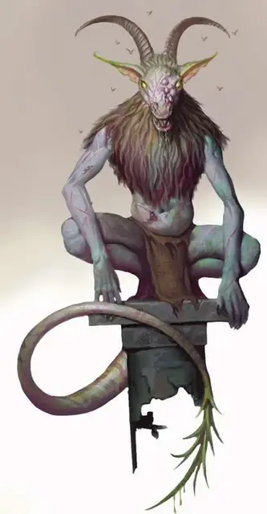

Булезау
Bulezau
Среднее Исчадие (Демон), хаотично-злое

Класс Доспеха 14 (природный доспех)
Хиты 52 (7к8 + 21)
Скорость 40 футов
| мод | спас | ||
|---|---|---|---|
| СИЛ | 15 | +2 | +2 |
| ЛОВ | 14 | +2 | +2 |
| ТЕЛ | 17 | +3 | +3 |
| мод | спас | ||
|---|---|---|---|
| ИНТ | 8 | −1 | −1 |
| МДР | 9 | −1 | −1 |
| ХАР | 6 | −2 | −2 |
Сопротивление урону огонь, холод, электричество
Иммунитет к урону яд
Иммунитет к состояниям отравление, очарование, испуг
Чувства тёмное зрение 120 футов, пассивное Восприятие 9
Языки Бездны, Телепатия 60 фт.
Опасность 3 (700 опыта)
Бонус мастерства +2
Особенности
Гнилостное присутствие. Когда любое отличное от демона существо начинает ход в пределах 30 фт от одного или нескольких булезау, оно должно преуспеть в спасброске Телосложения Сл 13 или получить 1к6 урона некротической энергией плюс 1 урона некротической энергией за каждого булезау в пределах 30 футов от него.
Прыжок с места. Булезау может прыгать в длину на 20 футов и в высоту на 10 футов без разбега.
Устойчивый. Булезау совершает с преимуществом спасброски Силы и Ловкости против эффектов, сбивающих его с ног.
Действия
Шипастый хвост. Рукопашная атака оружием: +4 к попаданию, досягаемость 5 футов, одна цель. Попадание: 8 (1к12 + 2) колющего урона. Если цель является существом, оно должно преуспеть в спасброске Телосложения Сл 13 против болезни, или стать Отравленной до прекращения заболевания. Пока цель отравлена таким образом, она исторгает кипящий гной, кашляет мухами и сбрасывает куски кожи, а также совершает повторный спасбросок Телосложения Сл 13 каждые 24 часа. В случае успеха спасброска, болезнь завершает действие. В случае провала, максимальное значение хитов цели понижается на 4 (1к8). Цель умирает, если максимальное количество хитов опускается до 0.
Описание
Болезненные проявления животной ярости, булезау воплощают жестокость природы. В Бездне, булезау скрываются в глубоких каньонах и среди высоких утёсов, также во множестве находя своё место среди армий демонических повелителей, служа там в качестве пехотинцев в бесконечной войне Бездны.
Кровожадность. Булезау жаждут насилия. Их стремление убивать и желание умереть делают их неотъемлемой частью свиты любого демонического лорда. Когда их не подчиняют более крупные и сильные демоны, булезау собираются в блуждающие толпы, сражающиеся между собой, пока не появится лучшая цель или пока более сильный демон не подчинит их.
Отталкивающее. Отвратительные эпидемии болезней: гноящиеся глаза, личинки, извивающиеся в открытых язвах, и запах гнилого мяса, следуют за булезау, куда бы они ни пошли.
См. дополнительно статью: "Бестиарий: Демоны"